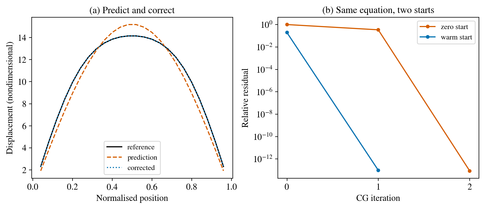

A useful role for learning: propose, solve and check#
Predicting a state and solving an equation#
A learned prediction \(\widetilde{\mathbf u}\) approximates a state. For a linear equilibrium equation \(A\mathbf u=\mathbf b\), evaluate its residual \(\mathbf r=\mathbf b-A\widetilde{\mathbf u}\). A visually plausible prediction can still have a substantial residual.
One conservative use of a predictor is to provide an initial guess to the original numerical solver. The solver continues until its declared residual criterion is met. This retains a meaningful equation-based acceptance test. Physical accuracy is assessed separately against suitable observations.
A learned linear initial guess#
The teaching experiment uses a one-dimensional spring-like system with 24 unknowns. We construct two training load patterns and solve for their displacements. A linear map fitted to those pairs predicts a displacement for a third load containing an unseen component. Conjugate gradients then corrects the prediction.
Let \(n=24\), \(x_i=i/(n+1)\) and \(A=\mathrm{tridiag}(-1,2.05,-1)\), with zero endpoint values. The two columns of \(B_{\mathrm{load}}\) are \(\sin(\pi x_i)\) and \(\sin(2\pi x_i)\). Solve \(AU=B_{\mathrm{load}}\) and fit the minimum-norm linear map \(K=U B_{\mathrm{load}}^+\), where \(+\) denotes the Moore–Penrose pseudoinverse. It learns only the supplied load subspace. For \(b_i=\sin(\pi x_i)+0.2\sin(3\pi x_i)\), the prediction is \(Kb\). All quantities in this teaching system are nondimensional.
Conjugate gradients (CG) then solves the positive-definite system. From \(u_0\), form \(r_0=b-Au_0\) and \(p_0=r_0\). At each step,
We recompute the displayed residual \(\|b-Au_k\|/\|b\|\) and stop below \(10^{-11}\), with a cap of 48 iterations. The two comparisons use \(u_0=0\) and \(u_0=Kb\). In exact arithmetic, this constructed load excites only two eigenmodes; the prediction removes the first, leaving one for correction. This explains the exceptionally small iteration counts.
{kind=link}

Figure 11 The learned linear prediction, direct solution and corrected state, together with residual histories. This constructed example compares CG iteration counts, using the zero initial guess as its baseline.#
The correction solves the same fixed positive-definite system as the direct reference. At complete convergence, both initial guesses reach the unique solution. With early termination, the initial guess influences the returned state and potentially its derivative. State the stopping rule when evaluating a learned solver component.
Moving from a line to an unstructured mesh#
A graph can represent finite-element connectivity. Nodes carry local state and material features; edges carry relative coordinates and connectivity. For fracture, plausible inputs include displacement, damage, history, material coefficients and boundary masks.
A message-passing layer first computes messages between neighbours and then aggregates them to update each node. An implementation must respect the actual mesh: edges should follow the intended physical interactions, including the separation across a notch. Equilibrium and damage irreversibility require explicit equation-based treatment.
For example, a layer can compute \(m_{ij}=f_\phi(h_i,h_j,x_j-x_i)\) and \(h_i'=g_\phi(h_i,\sum_{j\in\mathcal N(i)}m_{ij})\). Here \(h_i\) contains node features, \(\mathcal N(i)\) contains its mesh neighbours, and \(f_\phi,g_\phi\) are trainable maps. Summation makes the aggregation independent of neighbour ordering. Boundary conditions and history still need explicit treatment. This formula explains the graph extension; the executed predictor above uses the specified fitted linear map.
Three comparisons worth making#
Prediction alone: how accurate is the state and its physical residual?
Prediction followed by the original solver: how much correction is needed?
Training through the solver: does differentiated feedback improve the closed-loop result relative to the same network and data without that feedback?
Measure preprocessing, graph construction, inference, correction, memory and total time. Report matched residuals and field quality. A reduced iteration count describes solver work; end-to-end timings also include inference.
Exercise 1: diagnose the missing load component#
The predictor was trained on the first two sine-shaped load patterns. Why does a third-mode component require correction?
Worked solution
The fitted linear map is constrained by the training subspace. The third mode is independent of that subspace, so its response requires additional information. The numerical solver evaluates the complete equation for the new load.
Exercise 2: cost and fairness#
A model reduces a solve from 20 to 10 iterations but adds expensive graph construction. Which measurements establish acceleration?
Worked solution
Measure matched end-to-end wall time, including construction and inference, at the same residual and field-error criteria. Record warm-up separately and repeat timings. These measurements determine the total benefit of the iteration reduction.
Exercise 3: transfer to inverse recovery#
Propose a learned initializer for particle centres and radii. What data split would distinguish new-specimen generalisation from memorising one trajectory?
Worked solution
Use observed fields to propose admissible parameters, then refine them with PhAST. Split complete specimens or geometries between training and testing. Randomly splitting snapshots of the same specimen shares its geometry across the split and gives a weaker generalisation test.
See ADL4P’s GNN lecture and solver-coupled learning lecture as optional further reading. The model, fitting rule, correction algorithm and interpretation used in this lesson are specified above and in its code.